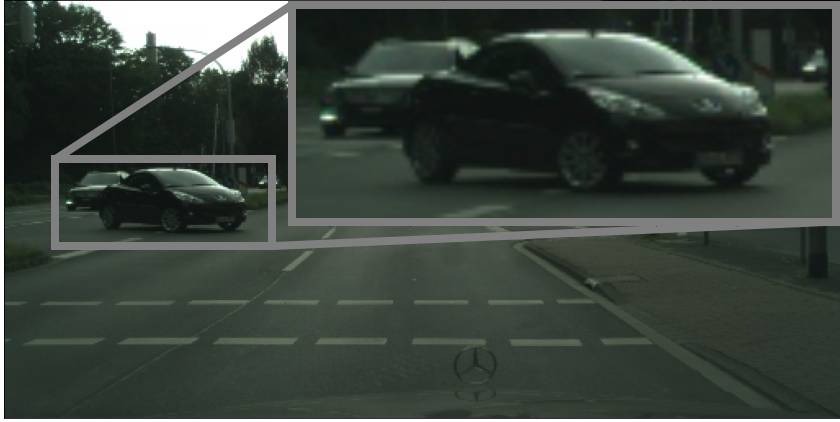

Self-supervised monocular depth estimation approaches either ignore independently moving objects in the scene or need a separate segmentation step to identify them. We propose MonoDepthSeg to jointly estimate depth and segment moving objects from monocular video without using any ground-truth labels. We decompose the scene into a fixed number of components where each component corresponds to a region on the image with its own transformation matrix representing its motion. We estimate both the mask and the motion of each component efficiently with a shared encoder. We evaluate our method on three driving datasets and show that our model clearly improves depth estimation while decomposing the scene into separately moving components.
| Input Image |
Our Scene Decomposition |
| Monodepth2's Depth Estimation |
 Our Depth Estimation Our Depth Estimation |
Monocular depth estimation methods assume a static scene by relying on the ego-motion to explain the scene and fail in foreground regions with independently moving objects (bottom-left: Monodepth2). By decomposing the scene into a set of components, we estimate a separate rigid transformation for each component, representing its motion. This improves the results in regions with moving objects (bottom-right) while simultaneously recovering a decomposition of the scene, mostly corresponding to moving regions (top-right).
Download Video

Paper

Self-Supervised Monocular Scene Decomposition and Depth Estimation
Sadra Safadoust and Fatma Güney
In 3DV, 2021.
@article{monodepthseg,
title={Self-Supervised Monocular Scene Decomposition and Depth Estimation},
author={Sadra Safadoust and Fatma G{\"u}ney},
journal={arXiv:2110.11275},
year={2021},
}
Acknowledgements
Sadra Safadoust was supported by KUIS AI Center Fellowship and Fatma Güney by Marie Skłodowska-Curie Individual Fellowship and TUBITAK 2232 International Fellowship for Outstanding Researchers Programme.